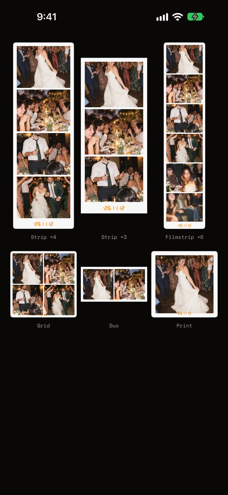

Christmas Party Photo Booth Ideas: 20 Cheap DIY Backdrops
Build it, light it, shoot it, and get the photos to everyone after.
Short answer: The best Christmas party photo booth ideas are cheap and simple: a tinsel curtain, a wrapping-paper wall or the tree as your backdrop, one soft light in front of faces, a phone on a tripod at chest height with a timer or remote, and a basket of big props. A DIY setup costs a fraction of a rental, which Thumbtack puts at $361 to $605 on average.
Plenty of pages will show you a pretty Christmas backdrop. This one shows you how to build it, light it and shoot it, so the photos come out as good as the idea. Below are 20 Christmas party photo booth ideas grouped by effort, a prop list, lighting rules for dark living rooms, every gear option from a free phone setup to a rented booth, versions for the office party and for family, and how guests actually get their pictures afterward.
What you need for a Christmas party photo booth
Every booth, from a $0 corner to a rented kiosk, is the same six parts:
- Space. A wall or corner about 6 feet wide, with 9 to 11 feet of clear floor in front: about 3 feet between the backdrop and the group, and 6 to 8 feet from the group to the camera. Four adults standing shoulder to shoulder take up roughly 6 feet, at about 18 inches each.
- A backdrop that fills the frame edge to edge, so nobody’s kitchen sneaks into the shot.
- One soft light in front of faces: a lamp, a ring light, or daylight from a window behind the camera.
- Something to hold the camera at chest height: a tripod, or a shelf and a stack of books.
- A trigger: the camera’s timer, a Bluetooth remote or a watch.
- Props in a basket on a small table beside the booth.
Set it up in 30 minutes
- Pick a corner off the main walkway, with no window behind it.
- Hang the backdrop and pull it tight. Wrinkles show up in flash photos.
- Put a strip of painter’s tape on the floor about 3 feet in front of the backdrop. Standing off the wall keeps shadows off it and softens it a little.
- Set the phone 6 to 8 feet from the tape, at chest height, on the 1x lens. The ultra-wide lens stretches the faces at the edges of the group.
- Place your light just above the camera, aimed at faces.
- Take a test shot with four people and check the edges of the frame for light switches, exit signs and half a coat rack.
20 Christmas party photo booth ideas: cheap DIY backdrops
Grouped from fastest to most ambitious. Most use tape, paper and things you already own.
Shiny and fast (under 30 minutes)
- Tinsel curtain wall. Tape two or three foil fringe curtains side by side with painter’s tape, overlapping the seams. A second color layered behind adds depth. Stand the camera slightly off-center so the flash doesn’t bounce straight back.
- Ornament curtain. Tie shatterproof ornaments to ribbons of different lengths and hang them from a curtain rod or tension rod. Three sizes in two colors looks deliberate.
- Fairy-light curtain. Hang a curtain of warm LED lights behind a sheer white panel. The panel softens every bulb into a glow, so the backdrop sparkles without competing with faces.
- Bow wall. Stick self-adhesive gift bows in tight rows on a sheet of foam board, in one or two colors.
Paper and wrapping
- Wrapping-paper wall. Cover a foam board, or the wall itself with painter’s tape, in one bold paper. Add a wide ribbon cross so the whole wall reads as a gift.
- Giant gift box. Wrap a big appliance box, cut away one side and let people pose inside the present. Kids will not leave it alone.
- Kraft-paper snow scene. Roll kraft paper across the wall and sponge-paint white trees and snowflakes. It takes an hour and looks handmade in the good way.
- Paper snowflake wall. Cut a few dozen paper snowflakes and tape them at different heights on a dark wall or a navy bedsheet.
Cozy and at home
- The fireplace. Stockings, garland and two armchairs. The best spot for seated family photos. Keep paper and tinsel well away from a lit fire.
- The tree itself. Stand people 4 to 5 feet in front of the tree with its lights on and the room lights low, plus one lamp on faces.
- Snowy window. Tape a cardboard window frame to a dark wall and tuck cotton batting along the bottom edge as snow.
- Couch and blankets. A plaid throw over the sofa, cocoa mugs and slippers, for a “Christmas morning at 7 a.m.” photo at 9 p.m.
Office-friendly
- Ugly-sweater runway. A strip of tape on the floor as the runway, plus a rack of loaner sweaters and scarves for anyone who didn’t wear one.
- Winter wonderland. White and silver, paper snowflakes, birch branches and a faux-fur throw. Festive without religious symbols, which matters at work.
- Wrapped door. Wrap a conference-room door in paper and ribbon. Teams pose in front of it like a delivery.
- Pom-pom snowfall. Hang white pom-poms on fishing line at different heights in front of a dark backdrop, so people can “catch” snowballs mid-shot.
Statement pieces (an afternoon)
- Balloon garland. Red, white and green, or white, silver and clear, wrapped around a doorway or an arch frame.
- Gingerbread house front. Kraft paper on a frame, white paint “icing” zigzags along the edges, and oversized cardboard candy props.
- Giant frame. An empty thrifted picture frame painted gold, hung on a dark wall or held up by the group.
- Santa’s armchair. The biggest armchair you own, a red throw and a pile of wrapped boxes. Whoever sits in it wears the hat.
Christmas photo booth props: what to buy, make and skip
Big, bold props read well in a photo; small ones vanish. Plan on about one prop per person in the frame, and put a few spares out because hats walk off.
Buy or borrow
- Santa hats, elf hats and antler headbands
- Knit scarves, earmuffs and mittens
- A giant candy cane or two
- Battery light-up necklaces
- Stick-on gift bows (one on the head is a classic)
- Empty boxes wrapped as presents, in three sizes
Make in 20 minutes
- Blank cardboard speech bubbles with a dry-erase marker, so people write their own lines
- Cardboard ornaments and stars taped to wooden skewers
- A “naughty” sign and a “nice” sign for the group to split over
Skip
- Props that cover faces, like masks and beards on sticks held over mouths
- Glitter, which you will find in March
- Real candles anywhere near a tinsel or paper backdrop
- At work: mistletoe and anything that jokes about drinking
How to light a Christmas photo booth
Bad light is the usual reason booth photos come out dark, orange or blurry. Six rules fix nearly all of it:
- Fairy lights are decoration, not lighting. Behind people they look great, but they can’t light faces. You still need a light in front.
- Light from the front, just above the camera. A lamp with a white shade, a ring light, or a bright window behind the camera during a day party. Faces come out even, and eyes catch a little sparkle.
- Never put a window or lamp behind the group. Backlight turns faces into silhouettes, and at night a dark window reflects the flash right back.
- Turn off the ceiling light above the booth. Light from straight overhead puts shadows under eyes and noses.
- Angle away from shiny backdrops. Tinsel and foil throw flash back as hot white blobs. Move the camera a step to one side.
- Use one color of light. Mixing warm lamps with cool daylight makes skin look patchy. Warm white bulbs (around 2700K on the box) everywhere is the easy fix.
Flash or no flash? Flash freezes movement and gives you the bright, disposable-camera party look. A steady lamp without flash gives warmer, softer photos but needs people to hold still for a beat. Our guide to taking good photos at a party covers when each one wins.
Gear options, from a phone and tripod to a rented booth
You don’t need a camera beyond the phone in your pocket. What changes is who presses the button and how photos get to guests.
| Setup | How it works | Rough cost | Best for |
|---|---|---|---|
| Phone on a shelf + timer | Prop the phone on books and use the self-timer. | $0 | Small family parties |
| Phone + tripod + Bluetooth remote | A clip-on phone tripod; many come with a small shutter remote. | Low: roughly $10 to $25 at big-box stores (our estimate, Nov 2026) | Most house and office parties |
| Phone + Apple Watch | The watch shows the camera’s view and fires the shutter. | $0 if you own one | Hosts who want to be in the photo |
| Tablet booth app | An iPad on a stand runs a booth app with a big preview screen. | Varies by app | Self-serve booths where people like to see themselves |
| Rented photo booth | A vendor brings the booth, prints, props and usually an attendant. | $361 to $605 national average (Thumbtack, 2026) | Big office parties and 50+ guests |
On iPhone, the built-in timer is the simplest trigger. Apple’s guide to setting up a shot with the camera tools lists timer options of 3, 5 or 10 seconds: 3 works once people know the drill, 10 when someone has to run into the frame. With an Apple Watch, the Camera Remote app turns the watch into a viewfinder, shoots on a 3-second timer by default and works within normal Bluetooth range, about 33 feet.
If you’d rather hand the whole thing off, a rental is the no-effort option. Thumbtack’s 2026 cost guide puts the national average at $361 to $605, with some companies charging $125 to $200 an hour, packages that typically start at two or three hours, and a prop box around $50 as an add-on. Ask whether prints and an attendant are included. For a bigger, wedding-scale setup, our wedding photo booth ideas compare rented, DIY and phone booths in more detail.
The office party photo booth
A booth is one of the easiest office activities because nobody has to perform. A few choices keep it comfortable for everyone:
- Make the theme winter, not one holiday. SHRM’s guide to more inclusive holiday celebrations warns against a “holiday party” that is really a Christmas party in disguise. Snowflakes, lights and sweaters work for everyone.
- Run it hard in the first hour. People are fresh, nobody has had a drink yet, and you get the whole team before anyone leaves early.
- Put it near the coffee or dessert, not the bar. Busy but not chaotic.
- Ask before you post. Share photos inside the company first, and get a yes before anything goes on public social media. A colored sticker for “no photos, please” is a kind touch for people who’d rather skip.
- Grab every team for a group shot. It becomes the year-end card, the intranet banner or next year’s invite.
- Keep props work-safe. Hats, scarves and speech bubbles, not mistletoe.
Want the booth to feed a game? A “best booth photo” vote works well alongside the other picks in our holiday party games for adults.
The family Christmas photo booth
- Set the camera for the shortest person, or seat everyone so the heights even out: grandparents in chairs, kids on laps or the floor, everyone else standing behind.
- Use burst mode for kids and pets. Somewhere in the burst, every eye is open.
- Bring a treat for the dog and hold it just above the camera.
- Repeat one pose every year. Same spot, same pose, same pajamas if you dare. In five years you have the best collage in the family.
- Time the reveal for a gathering moment. Photos from a Christmas Eve party are a fun thing to open on Christmas morning, and if the family is spread across houses, Boxing Day works too.
How guests get their photo booth pictures
This is the part most booth plans forget, and it decides whether anyone sees the photos again. The options, from simplest to most organized:
- AirDrop or text as you go. Fine for five people. At thirty, someone spends the party passing their phone around.
- A shared album. Guests add and grab photos themselves. We compare the free options in the best way to share photos with a group.
- Prints. A small photo printer by the booth hands out strips on the spot, or you can print a set after the party. See our guide to printing your photos.
- A shared film that develops later. Everyone’s photos, booth strips included, stay sealed until a reveal time, then open for everyone at once.
With Filmsera’s Photo Booth
Set an iPhone on the tripod running Filmsera’s Photo Booth mode. It has six layouts (Strip ×4, Strip ×3, Filmstrip ×6, Grid, Duo and Print), a 3-2-1 countdown and pose hints, so guests can run it themselves. After each round you can tap Share strip, Share for Story or Print-ready, or Add to film.

Add to film is the fun one. Create a shared film for the party, print its QR code by the booth, and guests join from the free iPhone app or from any phone’s browser with no app or account. Their own photos and every booth strip go into the same roll, sealed until the reveal time you set with Custom: Christmas morning for a family party, or 9 a.m. the next workday for the office. Then everyone in the film opens the whole night at once.

Know the limits before you plan around it (as of November 2026): the booth phone and the host need the iPhone app, and browser guests (including Android) take photos only. A free film covers up to 10 guests; for a bigger party, the host buys a one-time pass for that film. Free films keep photos for 30 days after the reveal, so save your favorites. Our holiday parties page walks through the rest.
Filmsera’s Photo Booth shoots strips with a countdown and pose hints, and you can add each one to a shared film that opens for everyone at the reveal. Get Filmsera on the App Store
FAQ
How do you make a cheap photo booth for a Christmas party?
Tape a tinsel curtain or wrapping paper to a wall about 6 feet wide, put a lamp just above your phone so it lights faces, and set the phone on a tripod or a stack of books at chest height. Use the camera timer or a Bluetooth remote, and fill a basket with hats, headbands and wrapped empty boxes.
What props do you need for a Christmas photo booth?
About one big prop per person in the frame, plus spares: Santa and elf hats, antler headbands, scarves and mittens, a giant candy cane, stick-on bows and empty boxes wrapped as presents. Blank speech bubbles with a dry-erase marker are the crowd favorite. Skip anything that hides faces, glitter, and at work, mistletoe.
How much does it cost to rent a photo booth for a Christmas party?
Thumbtack’s 2026 cost guide puts the national average at $361 to $605, with some companies charging $125 to $200 an hour and packages usually starting at two or three hours. Prints, props and an attendant can change the price, so ask what’s included. For a December weekend, request quotes a few weeks ahead.
How do you take photo booth pictures with an iPhone?
Mount the iPhone on a tripod at chest height, 6 to 8 feet from where people stand, on the 1x lens. Use the built-in timer (3, 5 or 10 seconds), a Bluetooth shutter remote, or an Apple Watch with the Camera Remote app. A booth mode in a camera app adds a countdown and builds strips automatically.
Where should you put a photo booth at a party?
Close to where people gather, like the dessert table or the coffee, but out of the main walkway so the line doesn’t block traffic. Avoid spots with a window or lamp behind the backdrop. At an office party, keep it away from the bar and run it hardest in the first hour.
Written by the Filmsera team
Filmsera is a shared disposable camera app for iPhone: create a film for your event, let guests join by QR code from the app or their phone's browser, and open the whole roll together at the reveal. Download on the App Store →
Photos in this article are illustrations created for Filmsera, not customer photos. App screenshots are from Filmsera on iPhone.